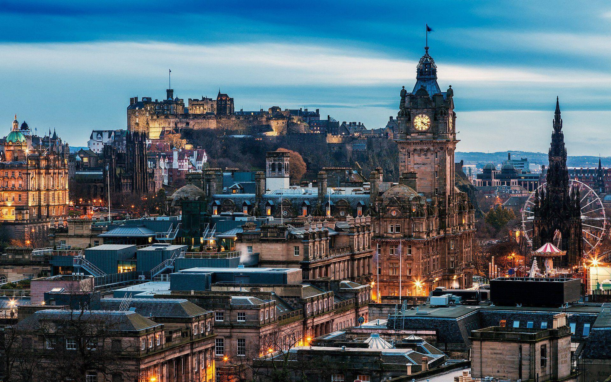

DESPRE ANGLIA
Regatul Unit sau Marea Britanie este situată în largul coastelor de nord-vest ale continentului European.
Regatul Unit cuprinde insula Marea Britanie, partea de nord-est a insulei Irlanda și multe insule mici. Irlanda de Nord este singura parte a Regatului Unit care are frontieră terestră cu un alt stat suveran— Republica Irlanda. În afara acestei frontiere terestre, Marea Britanie este înconjurată de Oceanul Atlantic, cu Marea Nordului la est, Canalul Mânecii la sud și Marea Celtică la sud-sud-vest, având a 12-cea mai lungă coastă din lume. Marea Irlandei se află între Marea Britanie și Irlanda.
Marea Britanie reprezintă una dintre cele mai frumoase destinații turistice ale Europei.
Sunteți gata să o explorați și să îi descoperiți comorile?
1. LONDRA

Capitala Angliei este un oraș plin de istorie, de la muzeele și palatele sale până la clădirile istorice, precum Westminster Abbey, locul de odihnă pentru mulți dintre cei mai mari conducători ai țării, de la scriitori la oameni de stat, la regalitate. Londra găzduiește unele dintre cele mai faimoase muzee din lume: Muzeul Britanic, Muzeul de Istorie Naturală și Galeriile Tate, toate oferind intrare gratuită.
Schimbarea gărzii de la Palatul Buckingham este o experiență care nu trebuie ratată, la fel ca și urmărirea minutelor care trec la Big Ben, probabil cel mai faimos ceas din lume.
Unele dintre cele mai bune spectacole din lume pot fi văzute la Londra, cu scena sa de teatru plină de viață. Concertele abundă, începând cu o slujbă de seară la Catedrala Sf. Paul, o biserică care este la fel de renumită pentru nunta dintre Lady Diana Spencer și Prințul Charles.
O altă atracție a Londrei este mersul cu un autobuz cu etaj pe Tower Bridge, peste râul Tamisa.
2. STONEHENGE
Unul dintre cele mai faimoase situri din lume, Stonehenge este compus din lucrări de pământ care înconjoară un cadru circular de pietre mari, pozițioante în picioare, în sud-vestul Angliei. De asemenea, găzduiește unele dintre cele mai importante descoperiri și structuri din Neolitic și din Epoca Bronzului din Marea Britanie, conținând aproximativ 200 de monumente.
Cu siguranță se numără printre cele mai cunoscute locuri de vizitat în Marea Britanie.
Stonehenge a fost construit în trei etape. Prima etapă, construită în aproximativ 3100 î.Hr.. Era format dintr-un șanț circular, un mal de pământ și găuri Aubrey. Găurile Aubrey sunt gropi circulare în stratul de cretă al pământului, care au aproximativ un metru lățime. Experții cred că gropile erau folosite în ceremonii religioase sau pentru înmormântări. Situl a fost abandonat la scurt timp după finalizarea acestei prime etape și nu a fost folosit mai mult de 1000 de ani.
3. ȚINUTURILE SCOȚIENE
Ținuturile Scoțiene sunt porțiunea accidentată de nord și nord-vest a Scoției. Zona este foarte puțin populată, cu multe lanțuri muntoase dominând regiunea, incluzând și cel mai înalt munte din Marea Britanie, Ben Nevis.
Highlands găzduiesc multe castele uimitoare, inclusiv Castelul Dunrobin și Castelul Eilean Donan, situat pe propria sa mică insulă din Loch Duich. Accesibil doar traversând un pod de piatră, a fost remodelat de mai multe ori într-un castel „ideal” și merită vizitat, cu câteva camere și exponate interesante.
Cel mai faimos lac din Scoția, Loch Ness se găsește și el în Highlands, clasând aceste ținuturi în topul celor mai apreciate locuri de vizitat în Marea Britanie.
4. EDINBURGH

Vizitatorii din Edinburgh trebuie să fie pregătiți să experimenteze istoria, de la străzile pietruite până la Castelul Edinburgh, care este simbolul capitalei Scoției.
Edinburgh este plin de istorie, începând cu orașele vechi și noi, care au peste 4.500 de clădiri istorice și situri între ele. Castelul Edinburgh, care se află în vârful unui deal cu vedere la oraș, reprezintă orașul vechi și istoria sa bogată. Orașul vechi găzduiește cea mai faimoasă stradă din Edinburgh, Royal Mile, care leagă Castelul Edinburgh de Palatul Holyroodhouse.
5. YORK
York este un oraș cu ziduri vechi și cu o moștenire bogată, situat acolo unde râul Foss se întâlnește cu râul Ouse. Un număr impresionant de atracții sunt înțesate în spațiul acestui oraș antic. York este la doar două ore de mers cu trenul de Londra.
O mulțime de atracții interesante concurează pentru atenția vizitatorilor, în timp ce se plimbă pe străzile pietruite ale orașului. Unul dintre reperele orașului este York Minster. Această catedrală de piatră impunătoare este plină de lucrări de artă remarcabile. Este puțin probabil ca copiii să se plictisească datorită „coșurilor de explorator” și altor activități destinate tinerilor de la catedrală.
Una dintre cele mai interesante atracții din York este Centrul Viking JORVIK. Această recreare a unui oraș viking surprinde priveliștile, sunetele și chiar mirosurile care au existat cu o mie de ani în urmă.